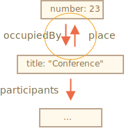

假设我们有一个复杂的对象，我们希望将其转换为字符串，以通过网络发送，或者只是为了在日志中输出它。
当然，这样的字符串应该包含所有重要的属性。
我们可以像这样实现转换：
let user = {
name: "John",
age: 30,
toString() {
return `{name: "${this.name}", age: ${this.age}}`;
}
};
alert(user); // {name: "John", age: 30}……但在开发过程中，会新增一些属性，旧的属性会被重命名和删除。每次更新这种 toString 都会非常痛苦。我们可以尝试遍历其中的属性，但是如果对象很复杂，并且在属性中嵌套了对象呢？我们也需要对它们进行转换。
幸运的是，不需要编写代码来处理所有这些问题。这项任务已经解决了。
JSON（JavaScript Object Notation）是表示值和对象的通用格式。在 RFC 4627 标准中有对其的描述。最初它是为 JavaScript 而创建的，但许多其他编程语言也有用于处理它的库。因此，当客户端使用 JavaScript 而服务器端是使用 Ruby/PHP/Java 等语言编写的时，使用 JSON 可以很容易地进行数据交换。
JavaScript 提供了如下方法：
JSON.stringify 将对象转换为 JSON。JSON.parse 将 JSON 转换回对象。例如，在这里我们 JSON.stringify 一个 student 对象：
let student = {
name: 'John',
age: 30,
isAdmin: false,
courses: ['html', 'css', 'js'],
wife: null
};
let json = JSON.stringify(student);
alert(typeof json); // we've got a string!
alert(json);
/* JSON 编码的对象：
{
"name": "John",
"age": 30,
"isAdmin": false,
"courses": ["html", "css", "js"],
"wife": null
}
*/
方法 JSON.stringify(student) 接收对象并将其转换为字符串。
得到的 json 字符串是一个被称为 JSON 编码（JSON-encoded） 或 序列化（serialized） 或 字符串化（stringified） 或 编组化（marshalled） 的对象。我们现在已经准备好通过有线发送它或将其放入普通数据存储。
请注意，JSON 编码的对象与对象字面量有几个重要的区别：
'John' 被转换为 "John"。age:30 被转换成 "age":30。JSON.stringify 也可以应用于原始（primitive）数据类型。
JSON 支持以下数据类型：
{ ... }[ ... ]true/false，null。例如：
// 数字在 JSON 还是数字
alert( JSON.stringify(1) ) // 1
// 字符串在 JSON 中还是字符串，只是被双引号扩起来
alert( JSON.stringify('test') ) // "test"
alert( JSON.stringify(true) ); // true
alert( JSON.stringify([1, 2, 3]) ); // [1,2,3]JSON 是语言无关的纯数据规范，因此一些特定于 JavaScript 的对象属性会被 JSON.stringify 跳过。
即：
undefined 的属性。let user = {
sayHi() { // 被忽略
alert("Hello");
},
[Symbol("id")]: 123, // 被忽略
something: undefined // 被忽略
};
alert( JSON.stringify(user) ); // {}（空对象）通常这很好。如果这不是我们想要的方式，那么我们很快就会看到如何自定义转换方式。
最棒的是支持嵌套对象转换，并且可以自动对其进行转换。
例如：
let meetup = {
title: "Conference",
room: {
number: 23,
participants: ["john", "ann"]
}
};
alert( JSON.stringify(meetup) );
/* 整个解构都被字符串化了
{
"title":"Conference",
"room":{"number":23,"participants":["john","ann"]},
}
*/重要的限制：不得有循环引用。
例如：
let room = {
number: 23
};
let meetup = {
title: "Conference",
participants: ["john", "ann"]
};
meetup.place = room; // meetup 引用了 room
room.occupiedBy = meetup; // room 引用了 meetup
JSON.stringify(meetup); // Error: Converting circular structure to JSON
在这里，转换失败了，因为循环引用：room.occupiedBy 引用了 meetup，meetup.place 引用了 room：

JSON.stringify 的完整语法是：
let json = JSON.stringify(value[, replacer, space])value : 要编码的值。
replacer
: 要编码的属性数组或映射函数 function(key, value)。
space : 用于格式化的空格数量
大部分情况，JSON.stringify 仅与第一个参数一起使用。但是，如果我们需要微调替换过程，比如过滤掉循环引用，我们可以使用 JSON.stringify 的第二个参数。
如果我们传递一个属性数组给它，那么只有这些属性会被编码。
例如：
let room = {
number: 23
};
let meetup = {
title: "Conference",
participants: [{name: "John"}, {name: "Alice"}],
place: room // meetup 引用了 room
};
room.occupiedBy = meetup; // room 引用了 meetup
alert( JSON.stringify(meetup, ['title', 'participants']) );
// {"title":"Conference","participants":[{},{}]}这里我们可能过于严格了。属性列表应用于了整个对象结构。所以 participants 是空的，因为 name 不在列表中。
让我们包含除了会导致循环引用的 room.occupiedBy 之外的所有属性：
let room = {
number: 23
};
let meetup = {
title: "Conference",
participants: [{name: "John"}, {name: "Alice"}],
place: room // meetup 引用了 room
};
room.occupiedBy = meetup; // room 引用了 meetup
alert( JSON.stringify(meetup, ['title', 'participants', 'place', 'name', 'number']) );
/*
{
"title":"Conference",
"participants":[{"name":"John"},{"name":"Alice"}],
"place":{"number":23}
}
*/现在，除 occupiedBy 以外的所有内容都被序列化了。但是属性的列表太长了。
幸运的是，我们可以使用一个函数代替数组作为 replacer。
该函数会为每个 (key,value) 对调用并返回“已替换”的值，该值将替换原有的值。如果值被跳过了，则为 undefined。
在我们的例子中，我们可以为 occupiedBy 以外的所有内容按原样返回 value。为了 occupiedBy，下面的代码返回 undefined：
let room = {
number: 23
};
let meetup = {
title: "Conference",
participants: [{name: "John"}, {name: "Alice"}],
place: room // meetup 引用了 room
};
room.occupiedBy = meetup; // room 引用了 meetup
alert( JSON.stringify(meetup, function replacer(key, value) {
alert(`${key}: ${value}`);
return (key == 'occupiedBy') ? undefined : value;
}));
/* key:value pairs that come to replacer:
: [object Object]
title: Conference
participants: [object Object],[object Object]
0: [object Object]
name: John
1: [object Object]
name: Alice
place: [object Object]
number: 23
*/请注意 replacer 函数会获取每个键/值对，包括嵌套对象和数组项。它被递归地应用。replacer 中的 this 的值是包含当前属性的对象。
第一个调用很特别。它是使用特殊的“包装对象”制作的：{"": meetup}。换句话说，第一个 (key, value) 对的键是空的，并且该值是整个目标对象。这就是上面的示例中第一行是 ":[object Object]" 的原因。
这个理念是为了给 replacer 提供尽可能多的功能：如果有必要，它有机会分析并替换/跳过整个对象。
JSON.stringify(value, replacer, spaces) 的第三个参数是用于优化格式的空格数量。
以前，所有字符串化的对象都没有缩进和额外的空格。如果我们想通过网络发送一个对象，那就没什么问题。space 参数专门用于调整出更美观的输出。
这里的 space = 2 告诉 JavaScript 在多行中显示嵌套的对象，对象内部缩紧 2 个空格：
let user = {
name: "John",
age: 25,
roles: {
isAdmin: false,
isEditor: true
}
};
alert(JSON.stringify(user, null, 2));
/* 两个空格的缩进：
{
"name": "John",
"age": 25,
"roles": {
"isAdmin": false,
"isEditor": true
}
}
*/
/* 对于 JSON.stringify(user, null, 4) 的结果会有更多缩进：
{
"name": "John",
"age": 25,
"roles": {
"isAdmin": false,
"isEditor": true
}
}
*/spaces 参数仅用于日志记录和美化输出。
像 toString 进行字符串转换，对象也可以提供 toJSON 方法来进行 JSON 转换。如果可用，JSON.stringify 会自动调用它。
例如：
let room = {
number: 23
};
let meetup = {
title: "Conference",
date: new Date(Date.UTC(2017, 0, 1)),
room
};
alert( JSON.stringify(meetup) );
/*
{
"title":"Conference",
"date":"2017-01-01T00:00:00.000Z", // (1)
*/!*
"room": {"number":23} // (2)
}
*/在这儿我们可以看到 date (1) 变成了一个字符串。这是因为所有日期都有一个内置的 toJSON 方法来返回这种类型的字符串。
现在让我们为对象 room 添加一个自定义的 toJSON：
let room = {
number: 23,
toJSON() {
return this.number;
}
};
let meetup = {
title: "Conference",
room
};
alert( JSON.stringify(room) ); // 23
alert( JSON.stringify(meetup) );
/*
{
"title":"Conference",
"room": 23
*/!*
}
*/正如我们所看到的，toJSON 既可以用于直接调用 JSON.stringify(room) 也可以用于当 room 嵌套在另一个编码对象中时。
要解码 JSON 字符串，我们需要另一个方法 JSON.parse。
语法：
let value = JSON.parse(str, [reviver]);str : 要解析的 JSON 字符串。
reviver
: 可选的函数 function(key,value)，该函数将为每个 (key, value) 对调用，并可以对值进行转换。
例如：
// 字符串化数组
let numbers = "[0, 1, 2, 3]";
numbers = JSON.parse(numbers);
alert( numbers[1] ); // 1对于嵌套对象：
let userData = '{ "name": "John", "age": 35, "isAdmin": false, "friends": [0,1,2,3] }';
let user = JSON.parse(userData);
alert( user.friends[1] ); // 1JSON 可能会非常复杂，对象和数组可以包含其他对象和数组。但是它们必须遵循相同的 JSON 格式。
以下是手写 JSON 时的典型错误（有时我们必须出于调试目的编写它）：
let json = `{
name: "John", // 错误：属性名没有双引号
"surname": 'Smith', // 错误：值使用的是单引号（必须使用双引号）
'isAdmin': false // 错误：键使用的是单引号（必须使用双引号）
"birthday": new Date(2000, 2, 3), // 错误：不允许使用 "new"，只能是裸值
"friends": [0,1,2,3] // 这个没问题
}`;此外，JSON 不支持注释。向 JSON 添加注释无效。
还有另一种名为 JSON5 的格式，它允许未加引号的键，也允许注释等。但这是一个独立的库，不在语言的规范中。
常规的 JSON 格式严格，并不是因为它的开发者很懒，而是为了实现简单，可靠且快速地实现解析算法。
想象一下，我们从服务器上获得了一个字符串化的 meetup 对象。
它看起来像这样：
// title: (meetup title), date: (meetup date)
let str = '{"title":"Conference","date":"2017-11-30T12:00:00.000Z"}';……现在我们需要对它进行 反序列（deserialize），把它转换回 JavaScript 对象。
让我们通过调用 JSON.parse 来完成：
let str = '{"title":"Conference","date":"2017-11-30T12:00:00.000Z"}';
let meetup = JSON.parse(str);
alert( meetup.date.getDate() ); // Error!
啊！报错了！
meetup.date 的值是一个字符串，而不是 Date 对象。JSON.parse 怎么知道应该将字符串转换为 Date 呢？
让我们将 reviver 函数传递给 JSON.parse 作为第二个参数，该函数按照“原样”返回所有值，但是 date 会变成 Date：
let str = '{"title":"Conference","date":"2017-11-30T12:00:00.000Z"}';
let meetup = JSON.parse(str, function(key, value) {
if (key == 'date') return new Date(value);
return value;
});
alert( meetup.date.getDate() ); // 现在正常运行了！顺便说一下，这也适用于嵌套对象：
let schedule = `{
"meetups": [
{"title":"Conference","date":"2017-11-30T12:00:00.000Z"},
{"title":"Birthday","date":"2017-04-18T12:00:00.000Z"}
]
}`;
schedule = JSON.parse(schedule, function(key, value) {
if (key == 'date') return new Date(value);
return value;
});
alert( schedule.meetups[1].date.getDate() ); // 正常运行了！
null。toJSON，那么它会被 JSON.stringify 调用。